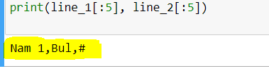

אהלן,
בשאלת הפוקימונים, לאחר שמסדרים את הפלט לפי שורות, אנו מקבלים שכל שורה היא בעצם רשימה. לאחר מכן, אנו נדרשים להחזיר את הקובץ אחרי הורדת שלושה משתנים. ניסיתי להשתמש בשיטת ה- slicing למשל print)line[0][:5[), אך משום מה הפלט המוחזר הוא מספר תווים מתחילת המחרוזת ולא תאים. מצרפת צילום מסך

היי, מה יוצא מ־print(type(line_1))?
מחרוזת. ממשיכה כדי להגיע ל 20 תווים .
מה את יכולה להסיק מזה? 
לייק 1
הבנתי שמטרת השאלה היא לפצל לרשימה של רשימות. כל ניסיון לפיצול המחרוזת בשנית, לא עזר. ניסיתי להשתמש ב- split פעם נוספת, אך הופיעה שגיאה שלא ניתן לפצל את הרשימה.
חשבתי על הכיוון של לנקות את הטקסט קודם מ- \n ולאחר מכן לפצל לרשימה, וגם כן לא הצליח.
מה לא עובד?
הבנת יפה את המטרה
תחשבי בכיוון הבא: איך את יכולה לפצל את המחרוזת שלך לרשימה וממנה אולי איך לפצל לעוד רשימה או לחילופין לבנות רשימה נוספת? יש לנו לולאות ופעולות מיוחדות של מחרוזות שיכולות לעזור.
בנוסף, אם תציגי את המחרוזת הקשוחה כמו שהיא, את תגלי שיש תווים מסוימים שקיימים בה שמוצגים באופן שונה קצת כאשר מדפיסים אותה.
לייק 1
התחלתי לפתור את השאלה בכך שפיצלתי את המחרוזת לשורות, וכך בעצם קיבלתי רשימה, בה כל שורה היא מחרוזת ארוכה.
אני תקועה בפיצול של השורות לתאים. אני רואה שכל תא בשורה מפריד ‘,’. שימוש נוסף ב split לא עבד. ניסיתי להשתמש במיקומים כדי לעשות השמה לכל שורה בנפרד ובכך ליצור רשימה חדשה. לזה התכוונת?
מה נמצא בכל “מחרוזת ארוכה” שכזו לדוגמה?
{kind=link}
זו אמורה להיות המחרוזת הראשונה, אבל היא נמצאת אצלך בתא השני, קצת מוזר לא?
שנית, הסולמית נמצאת בסוף המחרוזת ולא בתחילתה כמו שהיא רשומה במחרוזת הקשוחה המקורית.
ייתכן שיש לך בעיה של כיווניות? תנסי לחפש בפורום rtl כדי לסדר את זה
לייק 1
תודה פליקס וים על התגובות
אכן עניין התא הראשון מוזר, ממשיכה לנסות לפתור את השאלה.